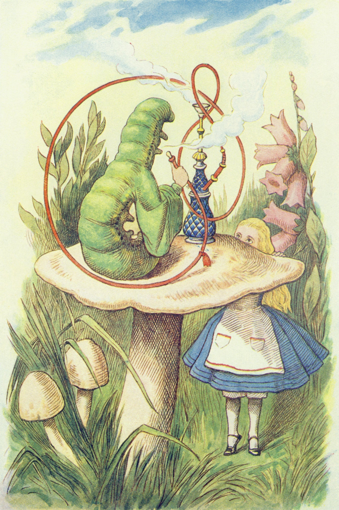

Welcome to Wonderland

Step into the dreamlike world of Lewis Carroll’s Alice’s Adventures in Wonderland, where logic turns inside out.
The text and illustrations are drawn from the public domain edition illustrations.
Navigation
Each chapter is designed to guide the reader visually through Alice’s adventures. You can begin reading from any chapter using the links at the top or bottom of each page. All content has been sourced from the public domain and formatted for clarity on desktop and/or mobile devices.
Ready to begin your descent into Wonderland?